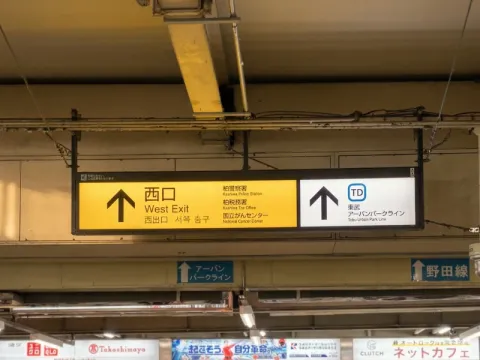
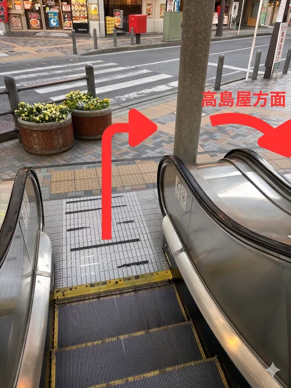
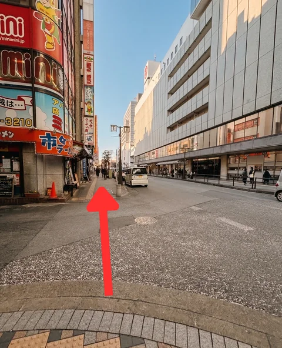
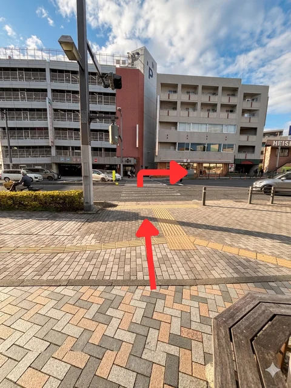
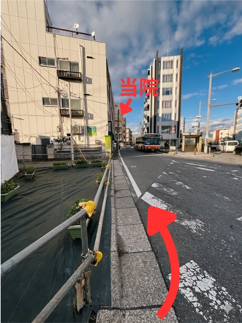
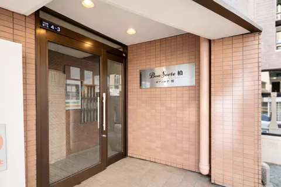
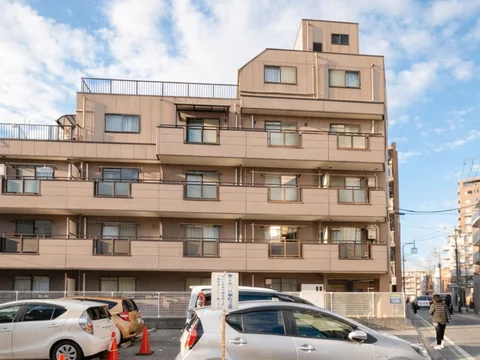
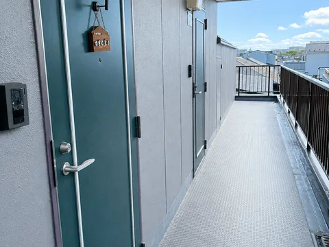
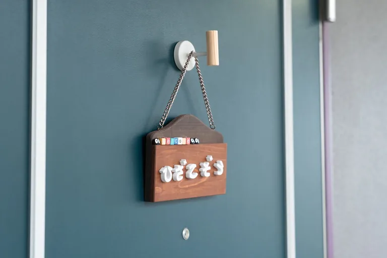

柏駅西口を出て、正面のエスカレーターまたは階段を降ります。
ACCESS
柏駅西口から徒歩約8分。「柏第一小学校前」バス停からは徒歩1分です。写真付きの道順、建物入口、エレベーター、駐車場の案内をまとめました。
| 受付時間 | 9:00〜19:00 |
|---|---|
| 定休日 | 日曜 |
| 予約方法 | LINEまたは電話 |
柏駅西口から当院までの道順を動画でご案内します。初めてお越しになる際に、駅からの景色や道順をご確認ください。
当院は「BoaSorte柏」の3階・305号室です。下の道順写真や地図もあわせてご覧いただけます。
YouTubeで道順動画を見る写真を押すと拡大できます。番号順にご確認ください。

柏駅西口を出て、正面のエスカレーターまたは階段を降ります。

降りたら右へ曲がり、高島屋方面の歩道へ進みます。

高島屋を右手に直進し、国道6号線方面へ向かいます。

横断歩道を渡って、そのまま直進します。

茶色のマンション「BoaSorte柏」が見えます。3階305号室が当院です。




道順や建物入口が分かりにくい場合は、LINEまたはお電話でご連絡ください。施術中はすぐに出られないことがありますが、確認後に折り返しご連絡いたします。